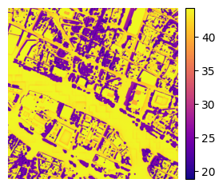
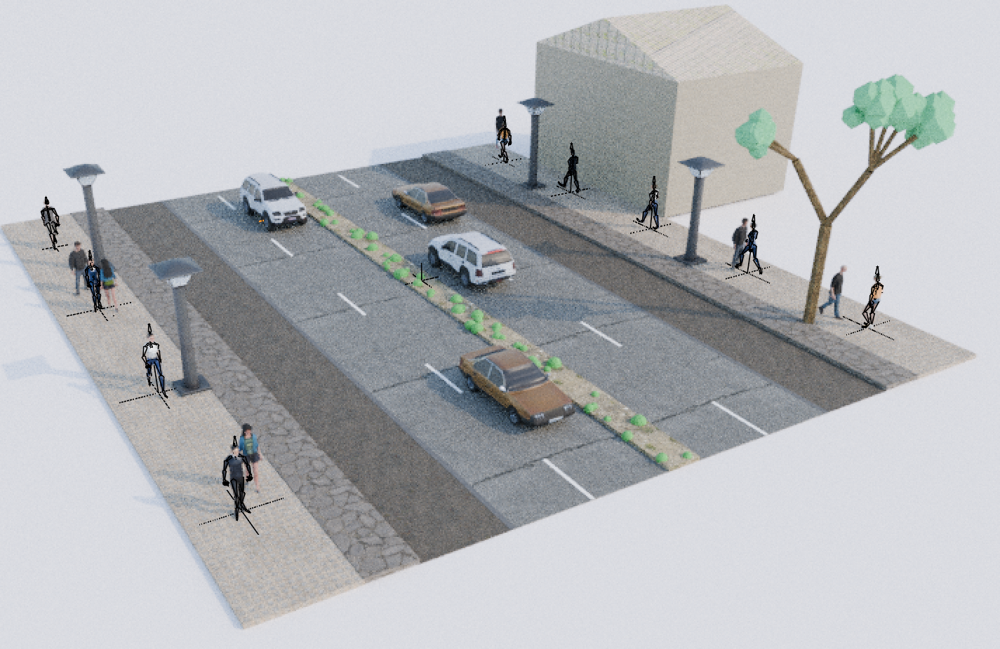
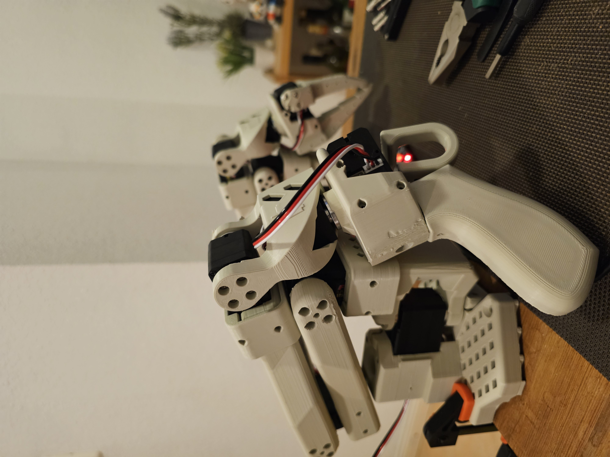
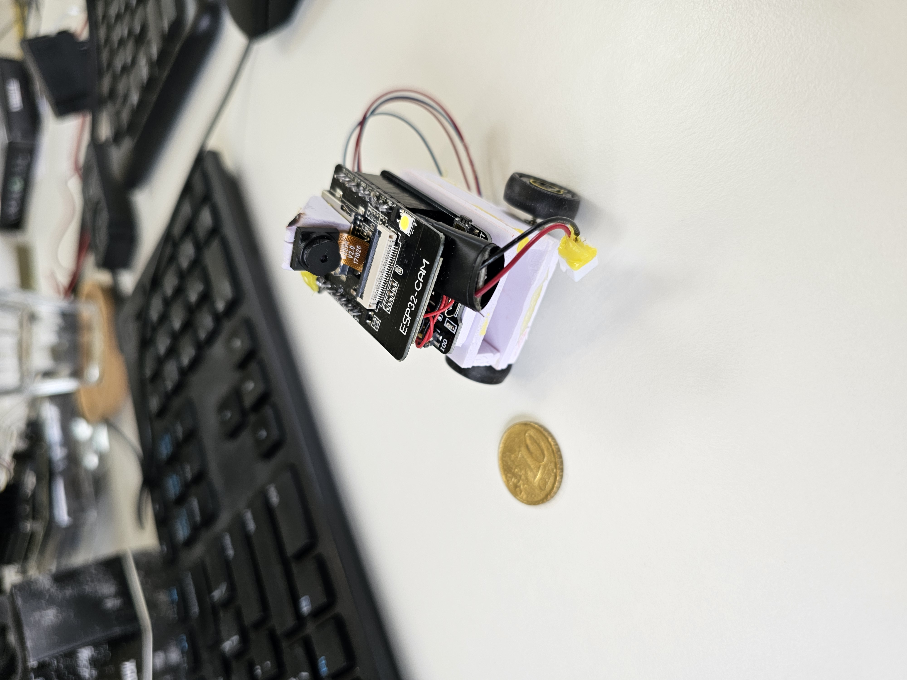
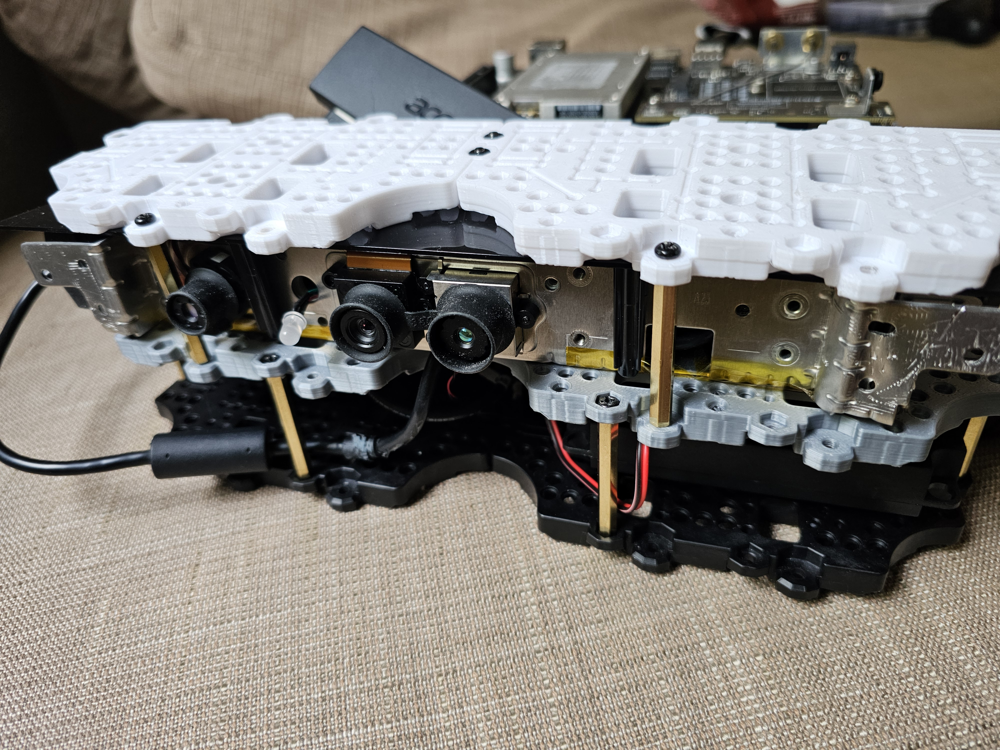
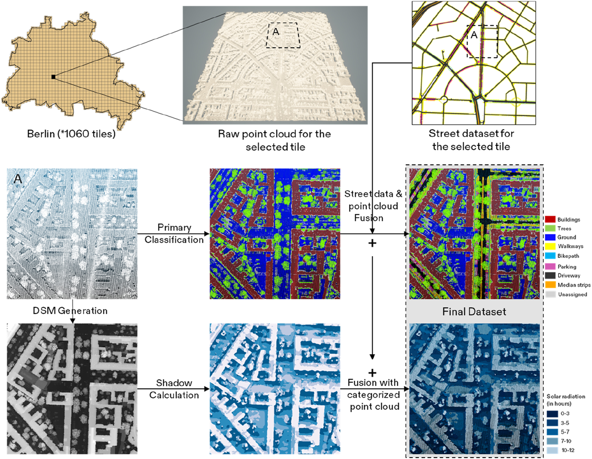
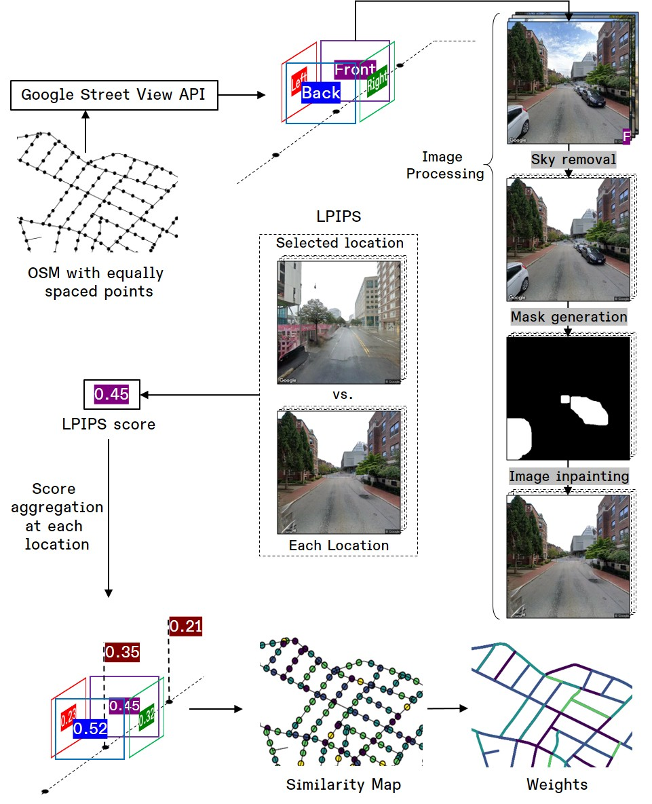
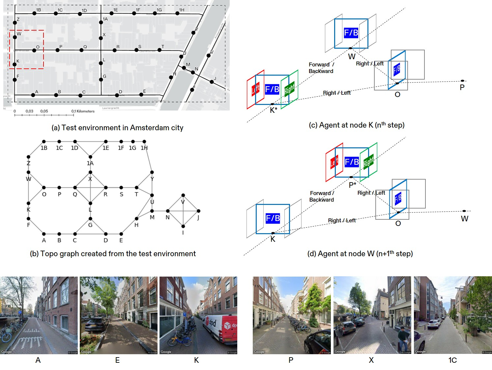

Generating Pedestrian-based thermal comfort maps and routing
Utilizing open source geospatial and meteorological datasets in Google Colab based pipeline to calculate PET maps coolpaths. Currently Under review at Urban Climate.
PostDoc @ SpACE Lab, Institute for Sustainable Urbanism, TU Braunschweig

Urban Scientist by training. Currently engaged in research related to GeoAI, Urban Design and Planning methods, Citizen Science, and Electronics and Hardware.
Published a paper on LLM-based Agent simulation in real urban areas for urban perception experiments.
Published a paper on NetLogo based pedestrian simulation targeting shadow affinity.
Presented on the topic "XR in Urban Design Education" at InterXR Conference at TU Braunschweig.
Started user perception studies @SpACE Lab aiming at modes of stimuli presentation.
Published a paper on GenAI agents and their use in Urban Design research.

Utilizing open source geospatial and meteorological datasets in Google Colab based pipeline to calculate PET maps coolpaths. Currently Under review at Urban Climate.

Procedural streetscapes generation with the help of Python and Blender. The 3D models are made fully customizable with textures, sounds and animations for VR ready applications and research. Currently Under review at Landscape and Urban Planning.

Arm printed and assembled, ready to train and teleoperate. Will experiment with general algorithms followed by training novel policies. More details to follow later.

Development of mini-robots to mimic behavior in navigating space (geospatially intact) and embodiment. More details to follow later.

Developed a platform to attach off-shelf components such as Xbox-360 Depth camera, Nvidia TX2 SBC, along with speakers and microphones for learning and deploying ROS applications. More details to follow later.


Visual similarity of neighbourhoods with street view images and deep learning
Learn more →
Simulation platform for smart mobility and autonomous navigation research.
Learn more →
Presenting at InterXR Conference at TU Braunschweig (09/2025).

At TU Dresden for final day at CRC Grant Final Presentation (03/2025).

ISU SpACE Lab day out at Bowling Alley (02/2025).

Meeting my PhD supervisor, Prof. Arnab Jana at IIT Bombay (11/2024)

In Shanghai for TU-Braunschweig and Tongji University Collaboration (10/2024).

In Shanghai at Sino-German Symposium (10/2024).

InterXR First Meetup at TU Braunschweig (09/2024).

SpACE Lab Team at Stadt der Zukunft day (10/2023).

Prof. Mehul Bhatt at SpACE Lab for Human Centered Design Seminar (05/2023).

ISU's Day out at Potsdam (10/2022).

Assembling sensors in Urban Data Lab Seminar (6/2022).

Visiting Institut Pascal in Paris (05/2022).

Video Wall being set up at SpACE Lab (05/2021).

Mobility Competition at University of Tokyo (09/2019).

Participating as Indian representative at Pritzker Forum on Global Cities, Chicago (06/2019).

Participating at IHSI Conference in San Diego (02/2019).
Currently at SpACE Lab, ISU TU Braunschweig as PostDoctoral Researcher.
Feel free to reach out via email or connect with me on LinkedIn or ResearchGate.